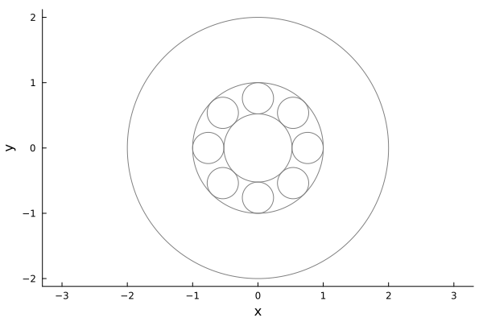
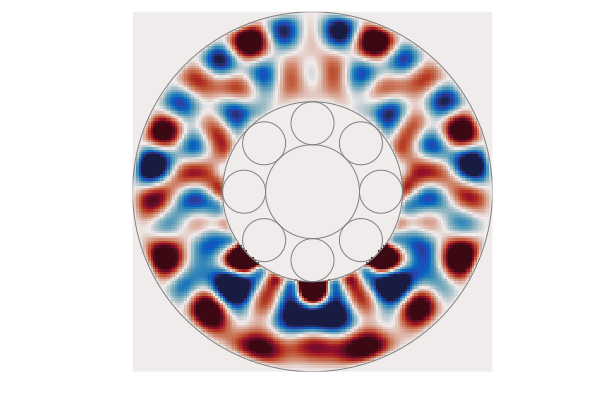
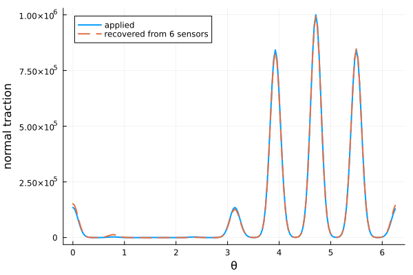
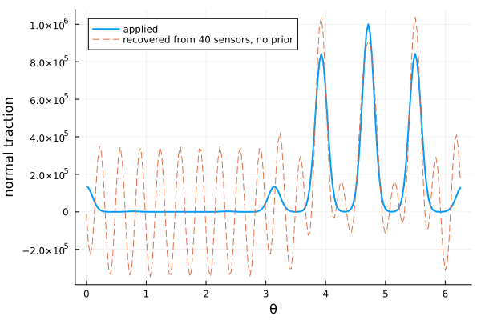

Waves in a roller bearing
The raceway of a roller bearing is modelled as the region between two concentric circles which is filled with an elastic medium. This page shows how to calculate the elastic waves in the raceway when the boundary data is known on both boundaries (the forward problem), and how to predict the loads on the inner boundary from sensors on the outer boundary (an inverse problem). For the theory see Kent, Loures, and Gower (2025).
The model
All fields have the time dependence $\mathrm e^{-\mathrm i \omega t}$, where $\omega$ is the angular frequency. The displacement $\boldsymbol u$ is written in terms of a pressure potential $\phi$ and a shear potential $\psi$,
\[\boldsymbol u = \nabla \phi + \nabla \times (\psi \, \boldsymbol{e}_z),\]
and each potential is a sum of Fourier modes in the polar angle $\theta$,
\[\phi(r, \theta) = \sum_n \left[ a_n \mathrm J_n(k_p r) + b_n \mathrm H^{(1)}_n(k_p r) \right] \mathrm e^{\mathrm i n \theta},\]
where $k_p = \omega / c_p$ is the pressure wavenumber. The shear potential $\psi$ has the same form with the shear wavenumber $k_s = \omega / c_s$.
There are four unknown coefficients for each mode $n$. To determine them we need two vector boundary conditions, each of which gives either the traction or the displacement on one of the boundaries. These are represented by BoundaryData.
The raceway
using ElasticWaves, MultipleScattering, Plots
steel = Elastic(2; ρ = 7800.0, cp = 5000.0, cs = 3500.0)
bearing = RollerBearing(medium = steel,
inner_radius = 1.0, outer_radius = 2.0,
number_of_rollers = 8
)
plot(bearing)Note that the traction on the inner boundary (τn,τt) is interpreted to be the vector τ = - τn * er - τt * eθ.
The forward problem
For the forward problem we give the traction on both boundaries. The rollers push on the inner boundary, and the outer boundary is free of traction.
Each roller is in contact with a small patch of the raceway, and here the rollers near the bottom of the bearing carry most of the load.
ω = 4e4
θs = LinRange(0, 2pi, 201)[1:end-1]
θ_rollers = (0:7) .* (2pi / 8)
contact(θ) = exp(-2 * (sin(θ / 2) / 0.1)^2)
load(θ) = 1e6 * exp(-2 * (sin(θ) + 1)^2)
normal = [sum(load(φ) * contact(θ - φ) for φ in θ_rollers) for θ in θs]
shear = 0.1 .* normal # due to frictionThe fields of a BoundaryData have one row for each angle in θs and two columns: the first is the radial component and the second is the angular component.
inner = BoundaryData(TractionBoundary(inner = true);
θs = θs, fields = hcat(normal, shear)
)
outer = BoundaryData(TractionBoundary(outer = true);
θs = θs, fields = zeros(length(θs), 2)
)To solve we need to choose a method. The ModalMethod solves for each Fourier mode separately. The simulation is solved when calling ElasticWave.
modal = ModalMethod(modes = -50:50)
sim = BearingSimulation(ω, bearing, inner, outer; method = modal)
wave = ElasticWave(sim)The Fourier coefficients for boundarydata1 are empty. The Fourier coefficients will be calculated from the fields provided.
The Fourier coefficients for boundarydata2 are empty. The Fourier coefficients will be calculated from the fields provided.The wave can now be evaluated anywhere in the raceway with displacement and traction. For example, we can check that the wave has the traction we asked for on the inner boundary, and no traction on the outer boundary:
x_inner = [bearing.inner_radius .* [cos(θ), sin(θ)] for θ in θs]
x_outer = [bearing.outer_radius .* [cos(θ), sin(θ)] for θ in θs]
τ_inner = [traction(wave, x) for x in x_inner]
τ_outer = [traction(wave, x) for x in x_outer]
maximum(abs(τ[1] - normal[i]) for (i, τ) in enumerate(τ_inner)) / maximum(normal)2.1400250331491815e-7maximum(abs(τ[1]) for τ in τ_outer) / maximum(normal)1.5175115373246516e-15To plot the wave we evaluate it on a grid of points which covers the raceway. Below we plot the stress component $\sigma_{rr}$, and clip the colours to better see the waves away from the rollers.
result = field(wave, bearing, TractionType(); res = 150)
σmax = 0.25 * maximum(abs(σ[1]) for σ in field(result))
plot(result, ω;
seriestype = :heatmap, field_apply = σ -> real(σ[1]),
clims = (-σmax, σmax), colorbar = false
)
plot!(bearing)
plot!(title = "", frame = :none, xguide = "", yguide = "")
Evaluating the field at many points, and for many modes, can take some time. Use a smaller res for a quicker plot.
An inverse problem
Now suppose that we do not know the loads on the rollers, and want to predict them from measurements taken on the outside of the bearing. Six sensors measure the displacement on the outer boundary. Below we simulate these measurements with the wave from the forward problem and add 2% noise.
θ_sensors = LinRange(0, 2pi, 7)[1:end-1]
x_sensors = [bearing.outer_radius .* [cos(θ), sin(θ)] for θ in θ_sensors]
u = stack(displacement(wave, x) for x in x_sensors; dims = 1)
u = u .* (1 .+ 0.02 .* randn(size(u)))
sensors = BoundaryData(DisplacementBoundary(outer = true);
θs = θ_sensors, fields = u
)Six sensors on their own can not resolve the narrow contact patches of the rollers. Instead we use what we already know: where the rollers are and the shape of each contact patch. What we do not know is the load on each roller. This prior knowledge is given by a BoundaryBasis with one element for each roller:
basis = map(θ_rollers) do φ
c = [contact(θ - φ) for θ in θs]
BoundaryData(TractionBoundary(inner = true); θs = θs, fields = hcat(c, 0.1 .* c))
endThe PriorMethod assumes that the traction on the inner boundary is a linear combination of the elements of the basis, and then fits this combination to the measurements. We also use that the outer boundary is free of traction.
method = PriorMethod(modal_method = modal)
inverse_sim = BearingSimulation(ω, method, bearing, sensors, outer;
boundarybasis1 = BoundaryBasis(basis)
)
inverse_wave = ElasticWave(inverse_sim)The Fourier modes for boundarydata2 are empty, they will be calculated from the fields providedWe can now compare the traction that inverse_wave predicts on the inner boundary with the traction that was applied:
recovered = [real(traction(inverse_wave, x)[1]) for x in x_inner]
plot(θs, normal, label = "applied", linewidth = 2,
xguide = "θ", yguide = "normal traction"
)
plot!(θs, recovered, label = "recovered from 6 sensors",
linewidth = 2, linestyle = :dash
)
The method stored in the wave tells us how well the measurements were fitted, and how well conditioned the fit was:
inverse_wave.method.boundary_error, inverse_wave.method.condition_number(0.01713653091203915, 23.114449637515122)Without a prior
Without a basis for the inner boundary we can use the ModalMethod with both the displacement and the traction on the outer boundary. This needs many more sensors, and even then the results can be poor. With $N$ sensors we can at most resolve $N$ Fourier modes, whereas the narrow contact patches need many more. Below we use 40 sensors and no noise.
θ_many = LinRange(0, 2pi, 41)[1:end-1]
x_many = [bearing.outer_radius .* [cos(θ), sin(θ)] for θ in θ_many]
many_sensors = BoundaryData(DisplacementBoundary(outer = true);
θs = θ_many,
fields = stack(displacement(wave, x) for x in x_many; dims = 1)
)
free = BoundaryData(TractionBoundary(outer = true);
θs = θ_many, fields = zeros(length(θ_many), 2)
)
modal_sim = BearingSimulation(ω, bearing, many_sensors, free;
method = ModalMethod(tol = 1e-3)
)
modal_wave = ElasticWave(modal_sim)
plot(θs, normal, label = "applied", linewidth = 2,
xguide = "θ", yguide = "normal traction"
)
plot!(θs, [real(traction(modal_wave, x)[1]) for x in x_inner],
label = "recovered from 40 sensors, no prior", linestyle = :dash
)The Fourier coefficients for boundarydata1 are empty. The Fourier coefficients will be calculated from the fields provided.
The Fourier coefficients for boundarydata2 are empty. The Fourier coefficients will be calculated from the fields provided.
Which modes are stable?
Solving for a Fourier mode can be ill-conditioned, typically more so for the higher modes and for the lower frequencies. The ModalMethod estimates the relative error of each mode, and by default stops at the first mode which has an error larger than the tolerance tol. That mode, and all the higher modes, are then left out of the solution, and a warning is shown.
The modes that were kept, and their estimated errors, are stored in the wave. For the forward problem above all the modes were kept:
wave.method.modes |> extrema(-50, 50)wave.method.mode_errors |> maximum6.91004176353993e-14